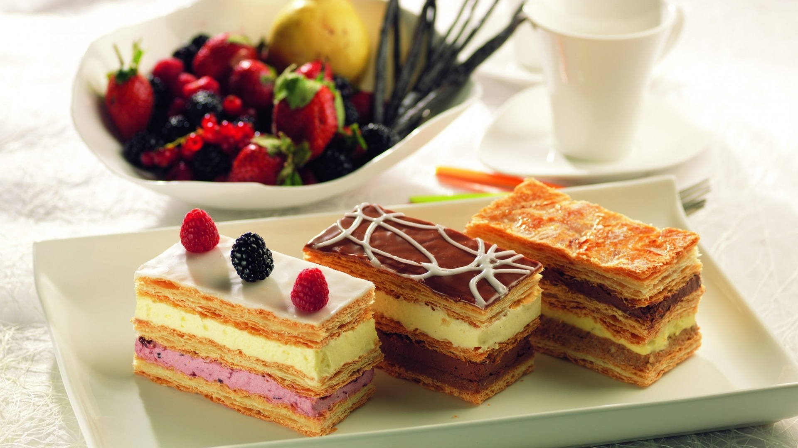

Слоеные пирожные

Слоеные пирожные – содержат большое количество сливочного масла. Слоеные пирожные выпекают в виде трубочек, рожков, бантиков, квадратов и прямоугольников. Изготавливаются слоеные пирожные с кремом, с фруктовыми начинками и другие.
Next